Electronic Design Automation
Field Programmable Gate Array
Field Programmable Gate Array
Focus is on low power, small form factor FPGAs
Clock trees take up a lot of power and die size
H/W designers want to make branches 50% populated
Saves 10% on area!
Use local routing from neighboring rows to borrow a clock branch
No longer a trivial assignment problem for clock routing
Greedy assignment can lead to an illegal solution
Need to implement an assignment algorithm
Considered dynamic programming to rollback assignments that lead to an illegal situation
Considered iterative cost-based algorithm to converge to a legal solution
Step back to model the problem more generically
Define demand $D$, assignment $A$, and coverage $C$ matrices
$M \times N$: $M$ rows, $N$ clock trees
$D_{i,j} = 1$ if clock tree $j$ is needed in row $i$, $0$ otherwise
$A_{i,j} = 1$ if clock tree $j$ is assigned a branch in row $i$, $0$ otherwise
$C_{i,j} = 1$ if clock tree $j$ is able to reach row $i$, $0$ otherwise
$A_{i,j} = 1 \implies C_{i-1,j} = C_{i,j} = C_{i+1,j} = 1$
$\min \sum\limits_{i,j} \left(D - A\right) : D_{i,j} = 1 \implies C_{i,j} = 1, \sum\limits_{j} A_i \leq \frac{N}{2}$
$D = \begin{bmatrix} 1 & 0 & \color{orange}{1} & 1\\ 0 & 1 & 1 & 0\\ 1 & 1 & \color{orange}{1} & \color{orange}{1}\\ 0 & 0 & 0 & 1 \end{bmatrix}$
$A = \begin{bmatrix} 1 & 0 & \color{orange}{0} & 1\\ 0 & 1 & 1 & 0\\ 1 & 1 & \color{orange}{0} & \color{orange}{0}\\ 0 & 0 & 0 & 1 \end{bmatrix}$
$C = \begin{bmatrix} 1 & 1 & 1 & 1\\ 1 & 1 & 1 & 1\\ 1 & 1 & 1 & 1\\ 1 & 1 & 0 & 1 \end{bmatrix}$
$D_{i,j} = 1 \implies C_{i,j} = 1$ ✔
$\sum A_i \leq \frac{N}{2}$ ✔
$\sum \left(D - A\right) = 3$
Model as a (B)ILP problem
Constraints
$C_{i,j} \geq D_{i,j}$
$C_{i,j} \geq A_{i-1,j}, A_{i,j}, A_{i+1,j}$
$C_{i,j} \leq A_{i-1,j} + A_{i,j} + A_{i+1,j}$
$\sum A_{i,j} \leq N/2$
Objective: $\sum \left(D - A\right)$
In C++, built the matrices from analyzing the circuit via internal data structures and API
Brought in LP solver library as a dependency, wrote interface
Stress tested with script-generated Verilog circuits
Productized (late 2019)
Fast, exact optimal solution, enabling substantial H/W power and area savings without requiring any user intervention
Chainsaw to cut paper?
How does it scale?
First Principles
Assumptions: issues with greedy approach
Break into fundamentals: mathematical model
Implement from scratch: new LP-based solution